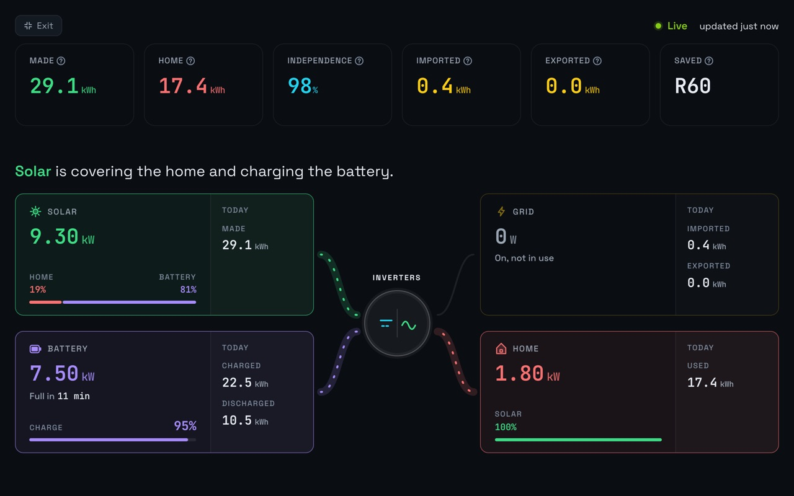

SunSynk on the wall.
Wall view puts your solar, battery, home and grid on a TV or tablet, full screen, updating every minute. The whole house can see when there’s sun to spare for the washing machine.

Set it up
- Open Prince Solar Hub in the TV’s or tablet’s browser and sign in.
- On Live, choose Fullscreen on the Power flow card.
- Leave it. It keeps updating every minute.
Good places for it
- A tablet in the kitchen, where the kettle and oven are.
- The lounge TV during load-shedding, to watch the battery.
What else it does
- Battery time leftHow long until it reaches its reserve.
- Power cut emailsAn email when the power goes, and when it’s back.
- Watch your parents’ solarTheir system next to yours, from anywhere.
- SunSynk data in ExcelDownload any days, up to a year at a time.
- Why Prince Solar HubEverything it adds to the SunSynk app.
Questions
Which plans have it?
Home and Family, and every plan for the first 7 days after you add your plant.
Does it work on any TV?
Any TV or tablet with a web browser.
See your SunSynk live.
Free for one plant. Nothing to install.
Try it freeSee pricing